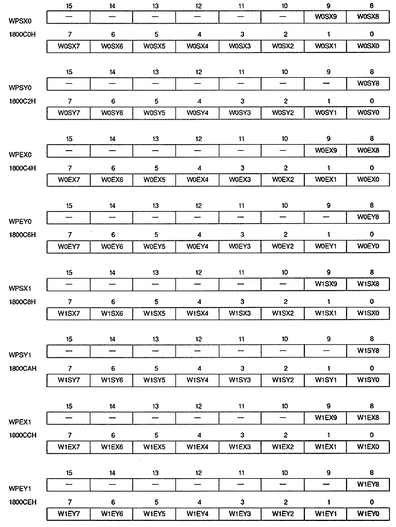

Return to previous page ｜ Return to menu ｜ Go to next page
-
Window position register
- The window position register specifies the horizontal and vertical start point coordinates and end point coordinates of the normal window. This is a write-only 16-bit register located at addresses 1800C0H to 1800CEH. The value is cleared to 0 after power-on or reset, so be sure to set it.

Return to previous page ｜ Return to menu ｜ Go to next page